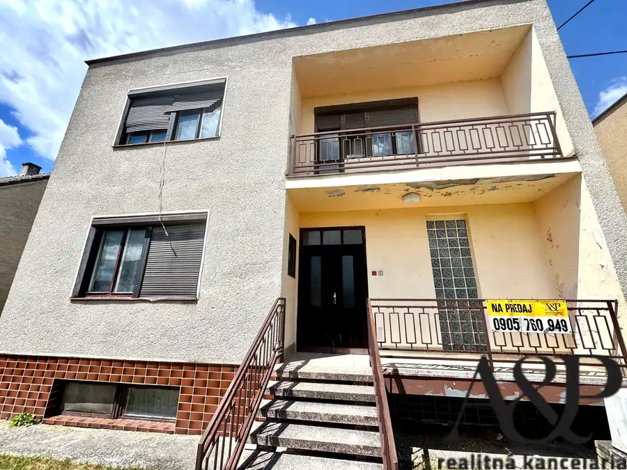
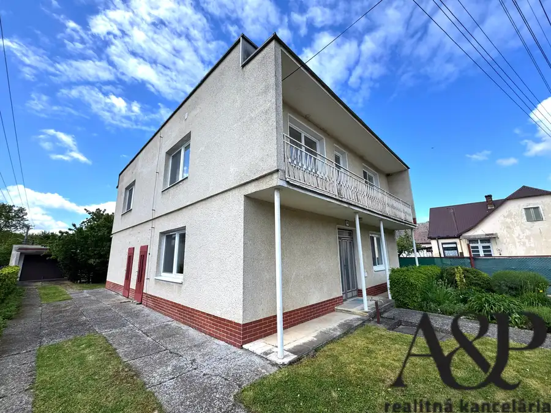
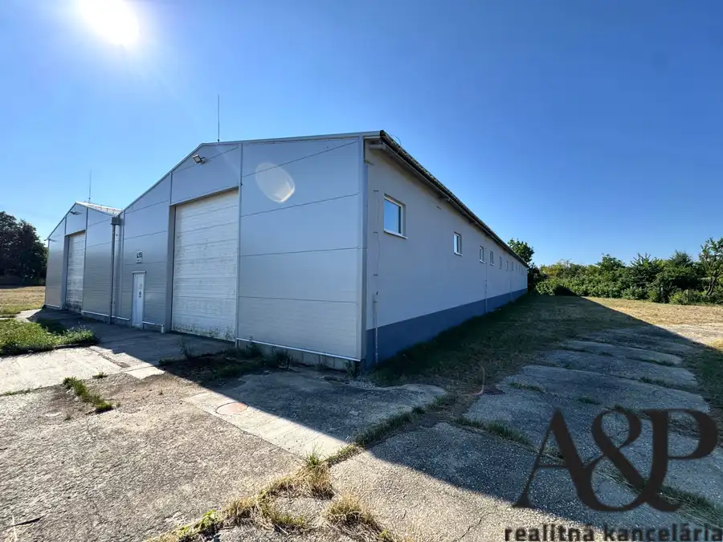
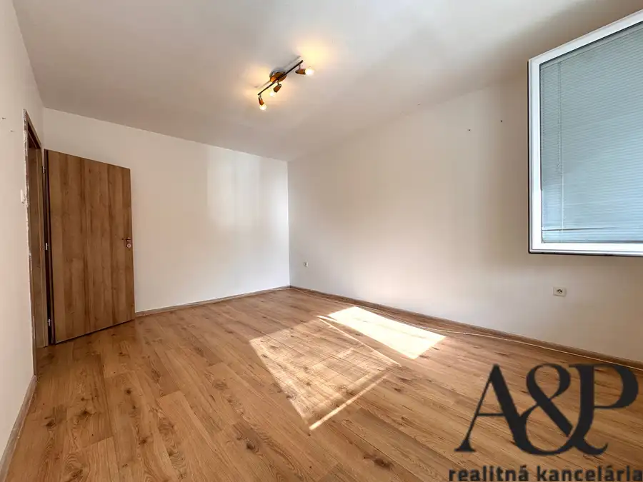
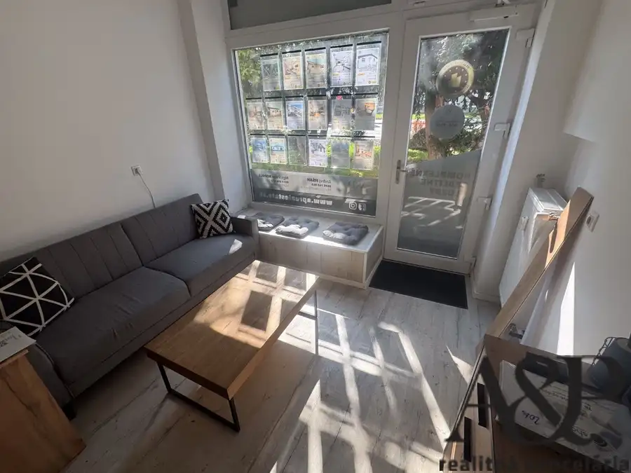
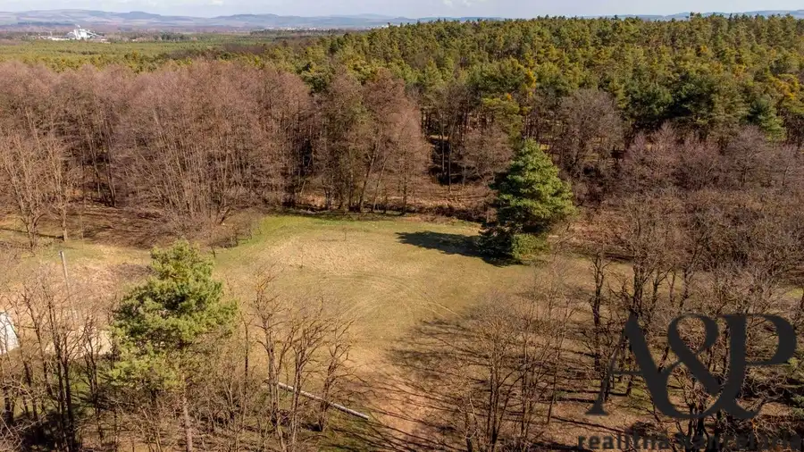
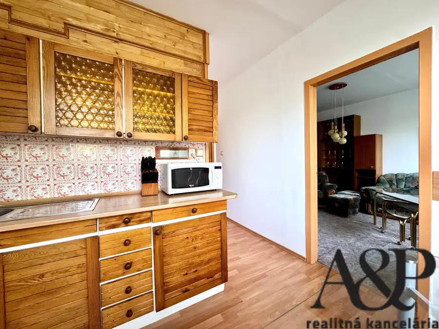
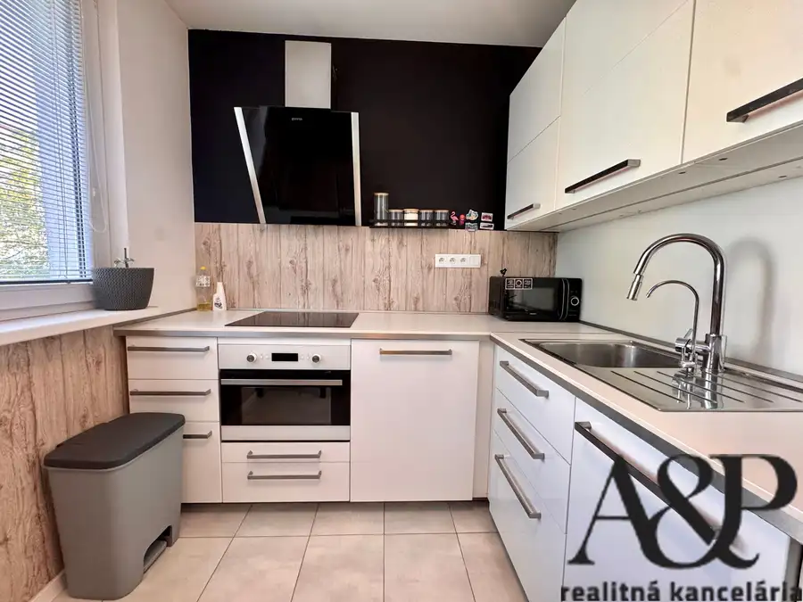
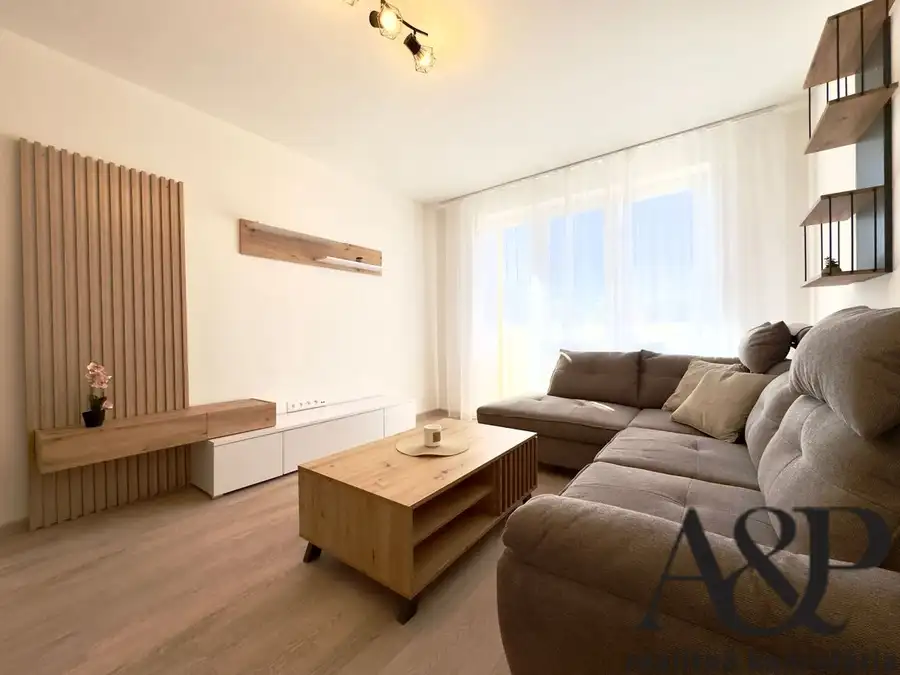

Aktuálna ponuka
10 nehnuteľností, predovšetkým byty, rodinné domy, komerčné priestory. Každá má vlastnú stránku s fotkami, popisom a mapou.
Prezrieť ponukuAndrej FišanRealitný maklér
Realitný maklér · A&P real estate
Predaj a prenájom nehnuteľností · Senica, Šajdíkove Humence, Rovensko




Byt10 84 500 €Znížená cena 1 izb. byt, 37m2, ul. l. svobodu, Skalica Skalica 1-izbový32 m²1. podlažie A&P REALITNÁ KANCELÁRIA Vám v exkluzívnom zastúpení majiteľov ponúka na predaj 1 izbový byt, ktorý sa nachdádza vo vyhľadávanej lokalite…
Komerčné priestoryNové4 Cena dohodouNa prenájom priestor v centre mesta, hviezdoslavova ul., Senica Senica 19 m² A&P REALITNÁ KANCELÁRIA vám vo výhradnom zastúpení majiteľa ponúka na prenájom obchodný priestor priamo v centre mesta Senica na…
Pozemok7 Cena dohodouDva pozemky priamo v prostredí lesa, Šajdíkové Humence, okr. Senica Šajdíkove Humence 4003 m² A&P REALITNÁ KANCELÁRIA Vám s poverením majiteľa ponúka na predaj dva pekné a rovinaté pozemky s veľkorysými rozmermi, ktoré sa nachádzajú…
Byt10 Cena dohodouNa prenájom veľký 3 izb. byt s loggiou, 84m2, s.Jurkoviča, Senica Senica 3-izbový84 m²1. podlažie A&P REALITNÁ KANCELÁRIA Vám vo výhradnom zastúpení majiteľov ponúka na prenájom veľký 3 izbový byt, ktorý sa nachádza vo vyhľadávanej…
Byt10 Cena dohodouNa prenájom 2 izb. byt s balkónom, 51m2, kalinčiakova ul., Senica Senica 2-izbový51 m²1. podlažie A&P REALITNÁ KANCELÁRIA Vám vo výhradnom zastúpení majiteľov ponúka na prenájom rekonštruovaný dvojizbový byt s balkónom, ktorý sa nachádza v…
Byt10 Cena dohodouNa prenájom rekonštruovaný 2 izb. byt s balkónom, 52m2, palárikova ul., Senica Senica 2-izbový52 m²2. podlažie A&P REALITNÁ KANCELÁRIA Vám vo výhradnom zastúpení majiteľov ponúka na prenájom novorekonštruovaný dvojizbový byt s balkónom, ktorý sa…Tomuto výberu zatiaľ nezodpovedá žiadna ponuka. Napíšte mi, čo hľadáte.
Volám sa Andrej Fišan. Som realitný maklér kancelárie A&P real estate a pôsobím predovšetkým v lokalitách Senica, Šajdíkove Humence, Rovensko a Tekolďany (Trnavský kraj).
10 nehnuteľností, predovšetkým byty, rodinné domy, komerčné priestory. Každá má vlastnú stránku s fotkami, popisom a mapou.
Prezrieť ponukuSenica, Šajdíkove Humence, Rovensko, Tekolďany, Smrdáky a okolie. Ponuku si môžete prezrieť podľa lokality.
Nehnuteľnosti v lokaliteOdhad trhovej ceny, príprava prezentácie, obhliadky, zmluvy a odovzdanie nehnuteľnosti.
Dohodnúť stretnutieKaždý špendlík je jedna nehnuteľnosť z mojej ponuky. Kliknite a pozrite sa.
© prispievatelia OpenStreetMap
Na čo sa pýtate najčastejšie, skôr než sa stretneme.
Odhad trhovej ceny vychádza z aktuálnych ponúk a predajov v lokalite, nie z cenníkových tabuliek. Podmienky Vám poviem pri prvom telefonáte.
Najprv obhliadka a odhad ceny, potom príprava prezentácie (fotografie, popis, inzercia), obhliadky so záujemcami, rezervačná zmluva, kúpna zmluva, návrh na vklad do katastra a odovzdanie nehnuteľnosti. O každom kroku viete vopred.
Najrýchlejšie cez WhatsApp alebo telefón. Termín stretnutia alebo obhliadky dohodneme podľa Vás.